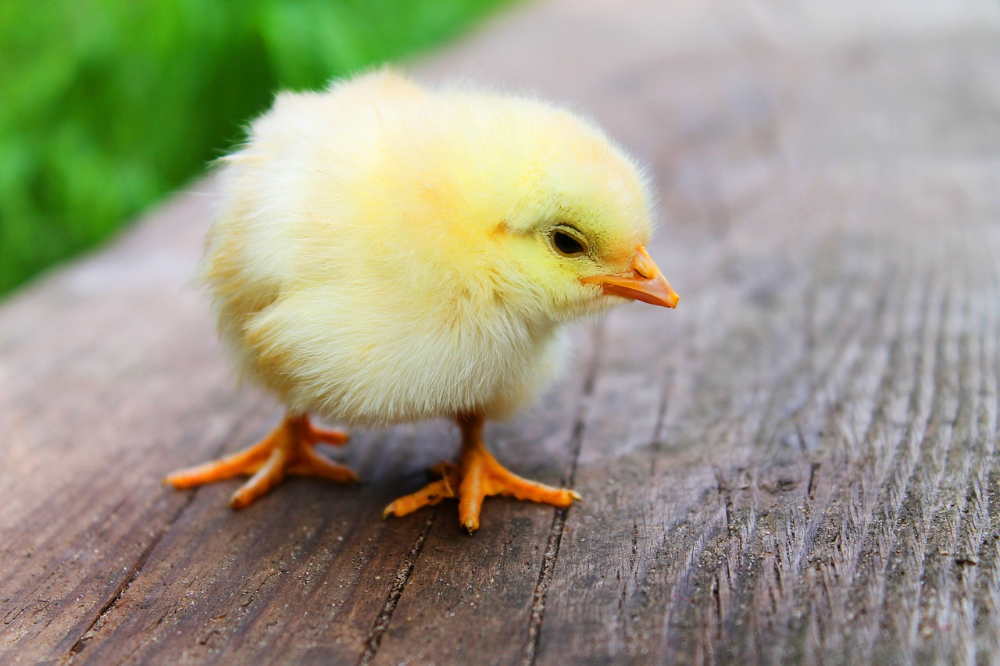
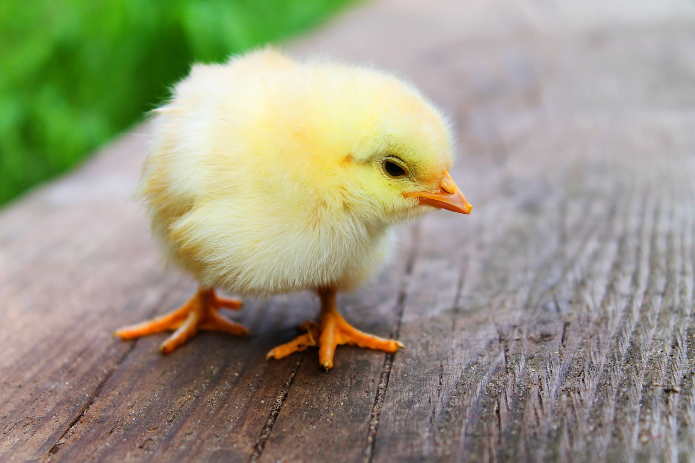
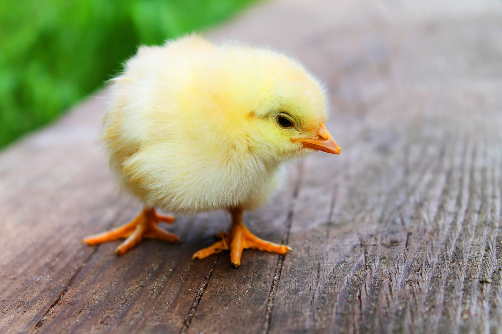
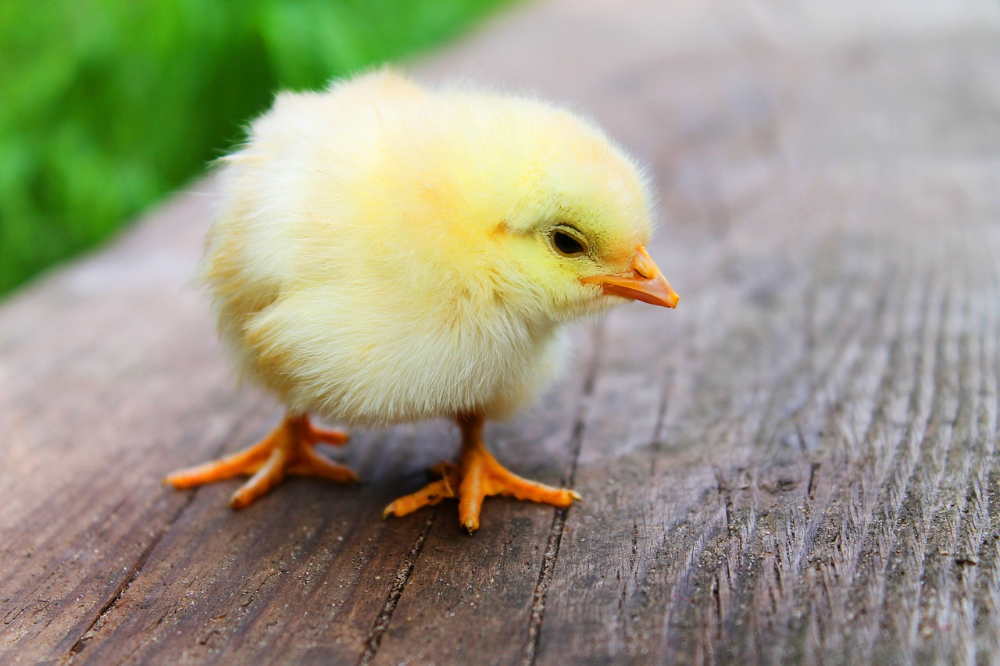

Conheça o adorável Peralta, com aproximadamente 9 meses, é extremamente amigável e enérgico, ele adora brincar com pessoas e outros animais. Está vacinado e castrado, pronto para encontrar um lar amoroso.

Minnie é uma ratinha da raça twister, tem aproximadamente 20 centímetro e é extemamente carinhosa, se dá bem com outros animais e crianças (não morde).

Este gatinho de 6 meses é tem a pelagem tigrada com tons de laranja.Cheio de energia, ele adora brincar com bolinhas e perseguir feixes de luz, mas também adora momentos aconchegantes no colo. Se dá bem com outro animais, é carinhoso e brincalhão (ainda não é castrado).

Russo é um filhotão de 6 meses, o último para adoção de uma ninhada de 7, aparenta ser porte M/G e ainda não é castrado. Tem muita energia portanto precisa de passeios ou atividades diariamente!

Este é José, um peixe Beta de cores lindas! Seu dono faleceu no início do mês, por isso estamos em busca de um novo lar que lhe dê a atenção necessário. Ps. já vai com aquário, aquecedor e comida.